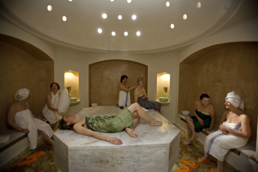
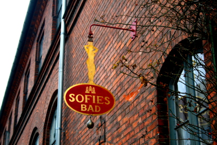

Sofiebaddet bev lukket i julen 1997 og genåbnet i januar 2000. Christianshavnere ønskede at bevarer det smukke hus, samt finde nye måder at bevare badet på, da det medfører en form for respekt for de gamle. Sofiebadet blev oprettet for de fattige klasser, hvor de fik adgang til bad da de ikke havde vand i husene. Ved siden af Sofiebadet lå der en skole hvor børn fik et bad efter idræt. I dag er badet lavet om til et hamambad, hvor man frit kan komme og afprøve det populære tyrkiske bad.
 